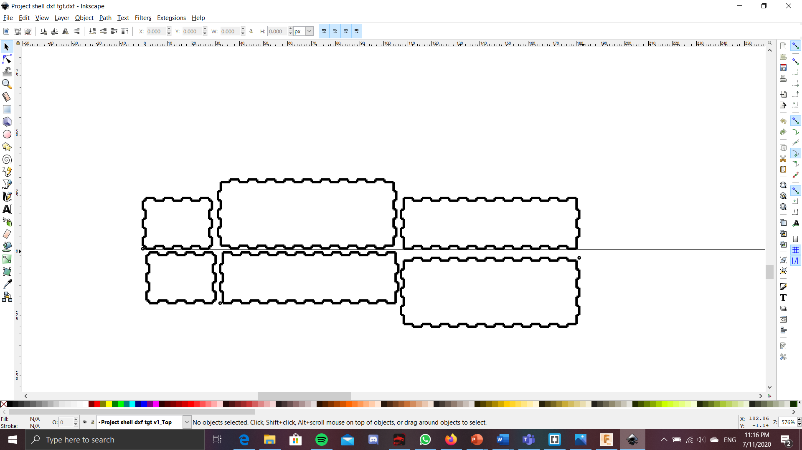

For the project, i plan to make a intruder door alarm, but will also take in account for potential members of the household, so that they can disarm the alarm when they walk in. It uses a ultrasonic sensor that senses if anyone has passed by the alarm, which ideally should be placed in a doorway, or a corridor. If someone does pass through the sensor, then they would have 20s to disarm the alarm, by holding the button at the back of the object for 5s. If the button is not pressed, then the buzzer, as well as the LED will go off, alerting the place that there is a intruder. To reset the alarm once the alarms have gone off, all you need to do is to press the button at the back, the same one for disarming the alarm. All of this will be powered by a battery, as it usually would need to be placed in a doorway or a entry overnight, there might not always be a laptop to power the alarm, so a battery in the alarm itself will make more sense, and just by removing the lid of the alarm, it will give easy access to the battery pack, so the batteries can easily be swapped out if they do run out.
The requirement of the project can be found here:https://rdorville.github.io/EP1000/finalProject/Final%20Project.html. For this project, i plan to make something simple, and compact. So this product will encase all of the electronics in a box and should be safely secured. The box should be large enought to house all of the components like the breadboard and the arduino, as well as the other outputs and inputs electronics, which might be protruding out via cutouts.
Requirements
- CADD and/or Digital graphic components (vector/raster):
- 2D cutting and engraving: 2D printed part would be the box in which would house all of the components. For engraving, could be just the labels on the box itself of where the components would be.
- 3D printed part: Standoff/ mount for the arduino, so can be mounted on top of the breadboard
- Embedded control using a microcontroller with
–input(s):Ultrasonic sensor, switch
–output(s):LED light, LCD display and buzzer
Bill of materials
General idea of how it works
Project journey
I will type out the ideas that came and went, as well as what i did here. Do note, not everything written was included in the final project, this is a area where i can write what the ideas i had during the process of making this project


This is the shell of the project. It is big enough to fit the breadboard + other electronics. It is also high enough so as to allow for a arduino board to be held by other 3D printed parts on top of the breadboard. However, as of now, there isnt any holes that would allow for output or input

Still does not work, needa do some tweaking
For my general idea, I am thinking of doing something like a intruder/burglar alarm. It will comprise of a Ultrasonic sensor as the input, while using a buzzer(which i can hopefully attain) and LEDs lights as the output. It works by having the a ultrasonic sensor sense an area. If the ultrasonic sensor gets a reading reading that is lower than usual, say 30cm or lower, it could mean that someone has crossed this area, and it could be an intruder. This will cause the LEDs and buzzer that we hooked up to trigger, letting the user know that they have some unwanted guests. On top of this, If it was a false alarm, there would a switch in the circuit that the user could press, and that would reset the alarm.
It is 22nd of july 2020, and i have come up with a 'final' idea, as well as the parts that need to be printed and laser cut.

So for the shell of the project, the shell is the same as the one at the top of the page, except here, i have managed to add the cutouts to the sides of the box, that will allow for the inputs and outputs of the project to sit. At the fron of the box, there is a cutout for the things that send out the signals from the ultrasonic sensor, as well as the little pill shaped looking piece of metal from the ultrasonic sensor.This allows for the ultrasonic sensor to send the signals outside of the box and bounch off surfaces of the outside, instead of the signals bouncing off the inside of the box. The little engraving or words at the bottom right side of the right side of the box says "Press to trigger the alarm". I hoped that by doing this it would deter any intruders from touching the button as it is used to disarm the alarm. To achieve, i plan to have cut out the sides of the box, then engrave it on those. Below this engraving, is a cutout for the switch. You can also see there is a cutout at the side of that would allow for the arduino stand to sit/hang on. The arduino sides of the arduino stand is slotted into this 2 parts, and when all of the sides of the shell is placed together, the stand would not drop. Speaking of the arduino stand, it is the 3d printed part for this project and will be a way for the arduino board to be mounted on a different height from the rest of the parts, making it so that the box would not have to be too large. The arduino stand also has grooves that helps to keep the arduino in place, so that the arduino would not fall of the stand if the project is moved. The little slot at the top is a cutout that is used to place the LEDs so that the light from the alarm can be seen from outside. I did not create a cutout for the buzzer, as i think it would not be needed. Since the sound from the buzzer can still be heard, even with a cutout.
As of 24th of july, i managed to roughly program out the program for the project, just that i did not program in the function of a buzzer yet as i do not have that component yet. Other than that, the program works fine and i have even considered adding in a LCD display which could make it more user friendly when trying to disarm the alarm. For the program, It start by naming the pins to the apporiate ports of the arduino, so the LCD takes A4 and A5, and Switch buzzer and LEDS are placed at the ports 8, 7 and 11, and the Ultrasound sensor is placed in port 9 and 10 . After wards, it starts by to keep continousally keep the ultrasonic distance and read the distance detected. If the distance is above a certain threshold, then nothing would happen, since it means that noone has walked past the sensor. However, if it detects that someone DID walk pass the sensor, It will then bring the the alarm to the next part of the program, where it would give the person that walk pass up to 20s to disarm the alarm. If it is disarmed in this time, then it will reset, and nothing will happen. However, if it is NOT disarmed, then it woud bring the alarm to the next part of the program, where it will start to the the LED and the Buzzer to trigger. It can then be disarmed again here IF the button is pressed. The code will be greater explained below in the section called arduino code. In order to incoporate this LCD display, i have added a cutout at the top of the shell so that the pins would be on the inside of the shell, while the other parts would be sitting at the top of the shell
It is 12 midnight on 25th of july and i realized i had made a mistake with my previous shell design. So i have redesigned the shell, and although it looks very similar to the previous design, i have tweaked the placement of several cutouts so it would be easier to fit the electronics in later, as well as making it a little more user friendly.

 This is the FINAL design of the laser cut shell of the project. I have added cutouts for the battery pack stand as i had not considered about the battery source before. So with this cutout, it will allow for the 3D printed stand to be placed in the shell.
This is the FINAL design of the laser cut shell of the project. I have added cutouts for the battery pack stand as i had not considered about the battery source before. So with this cutout, it will allow for the 3D printed stand to be placed in the shell. 
I have updated the design of the arduino and battery stands since i am worried that there might not be enough clearance, and thus just increased the amount of clearance, so that the stand will be able to fit abit easier.
Arduino Code
Here i will explain the code in much greater detail. So it first start by naming which component and which pin will be connected to which port of the arduino. The Trigger of the ultrasonic sensor is port 10 and echo pin is connected to port 9. The LED is connected to port 7, the Switch is connected to 8 and the buzzer is connected to port 11. Now starts the real part of the code. It first senses the distance of the Ultrasonic sensor. If it does fall below a certain threshold, the it would mean that someone has walked passed it and it will set the bool alarm to TRUE, and this will allow it to run the rest of the code, since it is in a WHILE loop that will only run IF the the bool alarm is TRUE